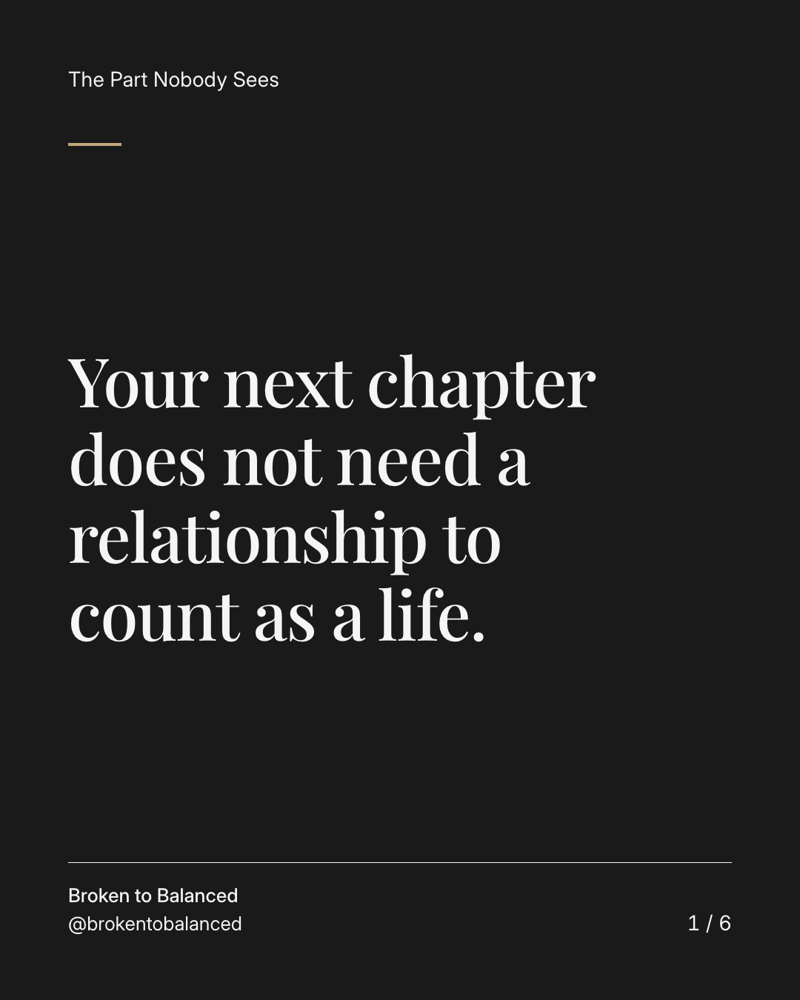
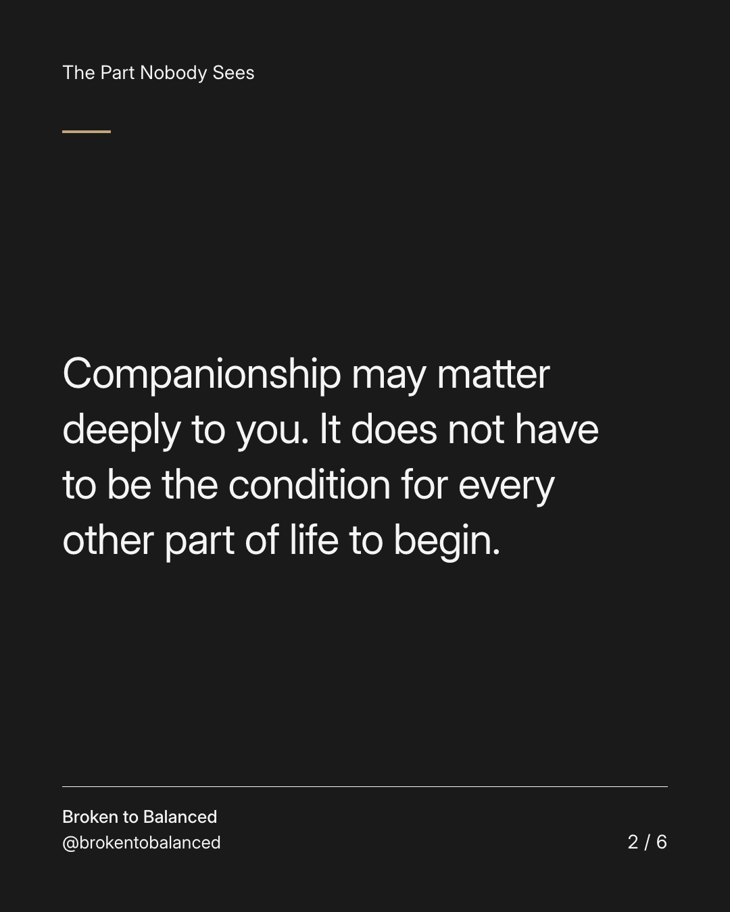
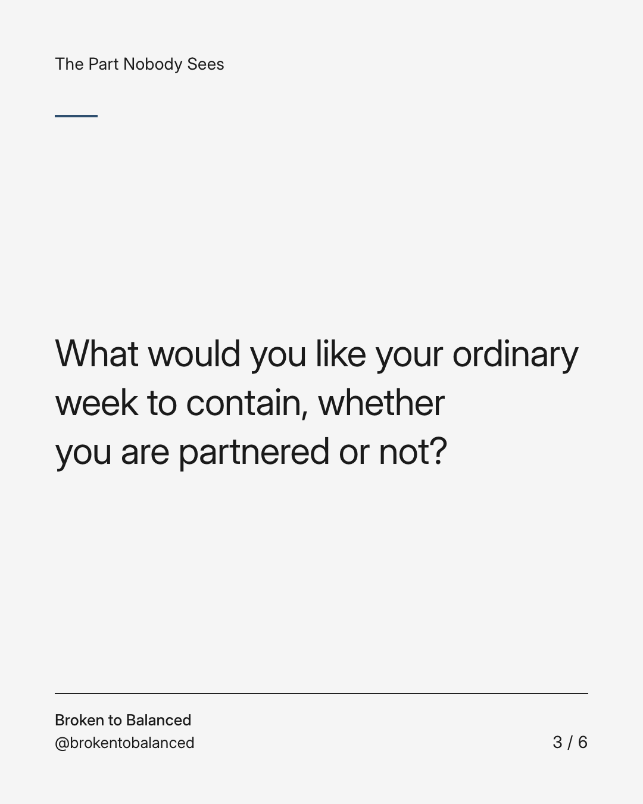
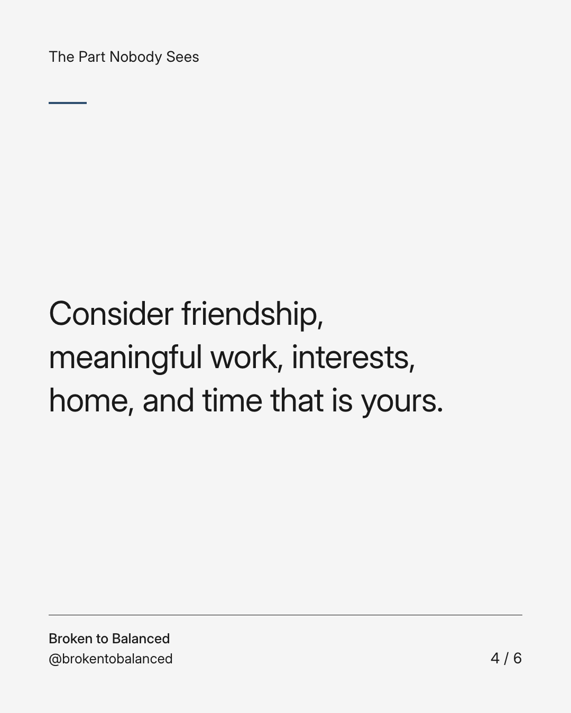
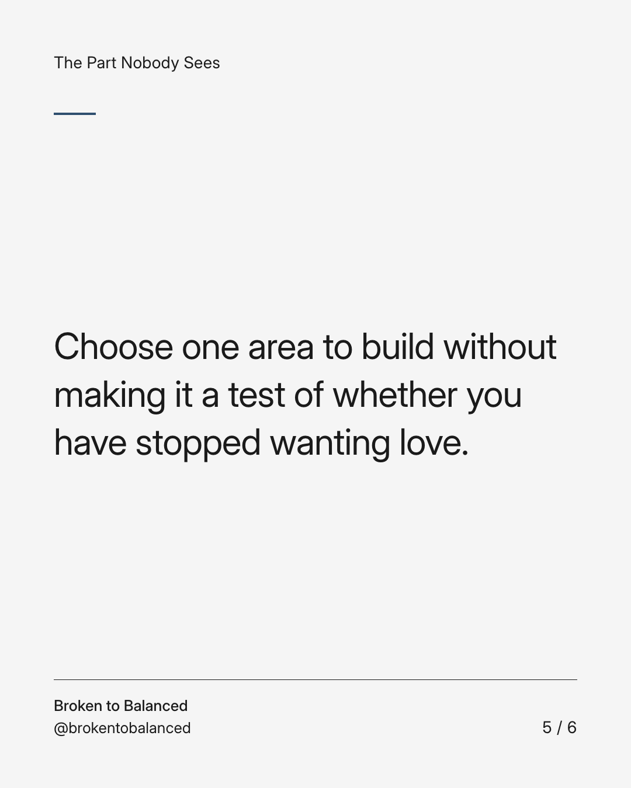

Exact text and accessibility text
Your next chapter does not need a relationship to count as a life.
Slide 1 of 6. Your next chapter does not need a relationship to count as a life.


Exact text and accessibility text
Companionship may matter deeply to you. It does not have to be the condition for every other part of life to begin.
Slide 2 of 6. Companionship may matter deeply to you. It does not have to be the condition for every other part of life to begin.


Exact text and accessibility text
What would you like your ordinary week to contain, whether you are partnered or not?
Slide 3 of 6. What would you like your ordinary week to contain, whether you are partnered or not?


Exact text and accessibility text
Consider friendship, meaningful work, interests, home, and time that is yours.
Slide 4 of 6. Consider friendship, meaningful work, interests, home, and time that is yours.


Exact text and accessibility text
Choose one area to build without making it a test of whether you have stopped wanting love.
Slide 5 of 6. Choose one area to build without making it a test of whether you have stopped wanting love.

Exact text and accessibility text
Send this to someone waiting to feel chosen before choosing anything for themselves.
Slide 6 of 6. Send this to someone waiting to feel chosen before choosing anything for themselves.
Exact caption
Plain-text fallback: select and copy the caption.